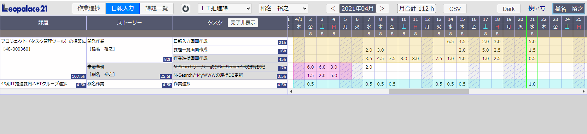

タスク管理システムは課題管理システムで登録した課題の中にストーリーを作成し更にその中にタスクを作成し作業の進捗状況を管理します。
タスク管理システムは下記アドレスより開いて下さい。
https://leoportal.leopalace21.com/leo-mywww/taskman/
※右上の氏名欄にゲストが表示されている場合は利用対象外となりますので、登録が必要な場合は公休予定表管理者までご連絡下さい。
※IEは非推奨となります、利用するにはChromeやEdgeを利用して下さい
作業進捗は課題のタスクを細分化し各タスクの進捗を更新することで、課題の進捗を管理します。
タスク管理を開くと画面左側に課題一覧が表示され、所属部署が選択された状態になります。
課題一覧に課題が存在しない場合は課題管理システムを確認して下さい
※担当者選択枠の初期値は自担当分ですが、未登録時は全てが選択された状態になります。
※各作業進捗枠のヘッダーをクリックすることでタイトルを変更することができます。
未振分枠にある課題をドラッグで作業進捗枠へ移動します。作業進捗枠は複数列あり各列の内容等は各課で設定して下さい。
ストーリーは課題タイトル右端にある『＋』ボタン又は課題タイトルを右クリックし『ストーリーの追加』をクリックします。
ストーリー名称・予定期間（期間は課題の予定期間内で入力可能）を入力し登録ボタンをクリックします。
ストーリーの中には必ずタスクが1つは必要な仕様の為、自動でタスク(NONAME)が作成されます。
任意で背景色・進捗割合・担当者・詳細内容を設定できます。【進捗割合】に関しては進捗割合についてを参照して下さい
追加したストーリーにNONAMEが作成されていますので、そのタイトルをクリックします。
更に追加したい場合はストーリータイトル右端にある『＋』ボタンクリックします。
タスク名称を入力し登録ボタンをクリックして下さい。
任意で進捗割合・進捗・詳細内容を設定できます。登録と同時に日報入力を行いたい場合は、日報入力欄を入力して下さい
タスク枠の進捗は１０％単位で変更可能です。プログレスバーをドラッグするか、直接プログレスバーをクリックしても変更が可能です。
タスクの進捗を変更することで、ストーリーと課題の進捗も自動で変更され、課題管理システムの進捗も自動で更新されます。
※課題の進捗は５％単位で変更されます。また他担当者のプログレスバーは誤操作防止の為変更不可です。
ストーリーやタスクはドラッグすることで並び替えが可能です。但し終了したストーリーやタスクは下方へ移動します。
課題の完了は課題管理システムで完了を行う事でタスク管理でも完了となります。
※タスク管理で完了枠にドラッグしても完了とはなりません
ストーリーやタスクの削除をする場合はタイトルを右クリックし『ストーリー（タスク）削除』クリックで削除します。
但し、進捗のあるストーリーやタスク、日報入力のあるストーリーやタスクは削除できません、日報や進捗をすべてクリア（0%）にしてから削除して下さい
進捗割合は課題の中のストーリー全体で100％と考え（タスクの場合はストーリーの中のタスク全体）その作業の比重により割合を変更できる機能です。
ストーリーやタスクを登録時に設定可能で、すべて自動にした場合はストーリーやタスクの数で案分されます。
例えばストーリーが２つある場合、同じような作業なら自動に設定することで50％に割り振られ、作業の比重が異なる場合は片方を手動で80％にすると
もう片方は自動で20％へ変更されます。適切な進捗割合を設定することで、課題の進捗が把握しやすくなります。
終了したストーリーは次回読込時に非表示になり、『終了したストーリー』をクリックすることで再表示します。
完了したタスクを表示するには、ストーリーのタイトルをダブルクリックするか右クリックし『タスクの表示』をクリックします。
終了したタスクが表示され、プログレスバーを表示したい時は同じようにタスクのタイトルをダブルクリックするか
右クリックし『プログレスの表示』をクリックします。
担当者選択を個人にした場合、その担当者のストーリーがあるデータのみが表示されます。
担当者選択を『全て』にすることで、その課題の全ての担当者のストーリーが表示されます。
また個人で絞り込んだ状態でも課題タイトルを右クリックし『他担当者ストーリー表示』をクリックすることでも表示可能です。
日報入力では作業進捗で作成したタスクに対して作業時間を入力し、課題の作業時間や当月の作業時間を管理します。
入力するタスクの日付枠をクリックし時間選択リストから作業時間をクリックし登録します。
登録すると、当日・当月・タスク・ストーリー・課題の作業時間に加算されます。
※公休予定表で設定した休日と翌日以降は入力できません
同じように日付枠を右クリックすると、コンテキストメニューが表示され、作業メモ欄を入力しEnterキーを押すか、メニューを閉じると登録されます。
メモが登録された枠には”★”マークが現れマウスホバーで内容が表示されます。
※コンテキストメニューで同時に作業時間の入力やコピー貼り付け等も可能です。
ＣＳＶボタンで課題毎や日毎のCSVをダウンロードできます。
課題一覧では課題の進捗状況を視覚で確認します。当日が赤の縦線で表示され現在の進捗が予定より進んでいるか遅れているか確認を行います。
また課題の予定期間の終了が迫っている場合は青色で表示し、超過している場合は赤色で表示されます。